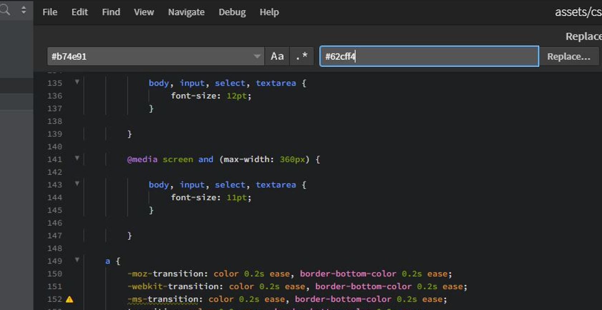
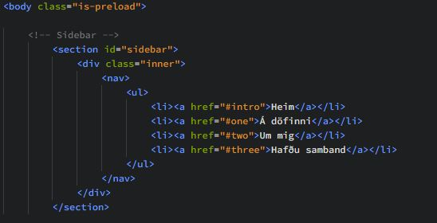

Verkefni 1
LýsingTilgangur verkefnis
Tilgangur verkefnisins er að búa til vefsíðu sem hýsir vinnuframlag okkar (portfolio)
Verkefnalýsing
- Skrásettu ítarlega hvernig þú framkvæmdir fyrsta verkefnið í máli og myndum þar sem eftirtaldið kemur fram:
- Hvaðan þú sóttir sniðmátið og/eða innblástur, útskýrðu ákvarðanatöku.
- Hverjar eru hönnunarforsendur í upphafi, t.d. hvernig hægt er að finna undirsíður, litaval eða annað sem hugsað var út í.
- Hvernig var staðið að myndvinnslu fyrir síðu, t.d. hvernig myndir og skjáskot voru smækkaðar og unnar fyrir verkefnið.
- Notaðir þú önnur forrit eða fannstu aðrar upplýsingar til að vinna verkefnið? Segðu frá.
- Segðu frá hvað þú vilt fá út úr áfanganum og veltu fyrir þér hvað þú myndir vilja gera sem lokaverkefni.
- Útskýrðu hvernig þú hlóðst upp síðunni á Github, hvort þú notaðir git bash eða aðra aðferð. Segðu frá þeim áskorunum sem þurfti að takast á við og hvernig var leyst úr þeim. Settu hlekk inná github repositoryið inná vefsíðuna sjálfa.
Það fyrsta sem ég gerði var að ákveða hönnunarforsendur um hvernig ég vildi hafa vefsíðuna. Grundvallaratriði var að hafa hana notendavæna, þ.e. skipulagða og einfalda, en einnig fannst mér mikilvægt að hún væri stílhrein. Því fannst mér tilvalið að hafa einfaldan vallista (menu) á hliðinni þar sem auðveldlega væri hægt að finna þær grunnupplýsingar sem notandi vefsíðunnar leitast eftir í stað þess að þurfa að scrolla. Einnig er auðvelt að bæta við nýjum einingaratriðum á vallistan ef t.a.m. vefsíðan á að hýsa fleiri en einn áfanga.
Eftir að hafa ákveðið hönnunarforsendur leitaðist ég eftir sniðmáti fyrir vefsíðuna sem hentaði hönnunarforsendunum mínum. Kennarinn mældi með html5up og varð Hyperspace sniðmát þeirra fyrir valinu, en mér fannst sniðmátið henta vel fyrir "portfolio" vefsíðu. Því næst var að velja ritil fyrir vefsíðuna en ég notaðist við ritilinn brackets.io en hann var einstaklega þægilegur notkunar þar sem hægt var að sjá breytingar á vefsíðunni í rauntíma án þess að þurfa að keyra kóðann í hvert skipti sjálfur.
Það fyrsta sem ég vildi gera var að breyta litnum á vefsíðunni úr fjólubláum í bláan.
En það gerði ég með því að leita uppi öll # sem standa fyrir fjólubláu litina og gera replace all yfir í bláa liti bæði í main skránni sem og index. Því næst breytti ég textanum í "generic.html" skránni en sú skrá tilheyrir forsíðunni. Eins og sjá má á myndinni hér til hægri þá skipti ég síðunni í 4 megin-hluta. "Heim", "Á döfinni", "Um mig" og "Hafðu samband". Í "Heim" má sjá lýsingu á vefsíðunni með gagnvirkan hlekk að áfanganum en það var gert með eftirfarandi skipun takki.
 Í "Á döfinni" má sjá yfirlit yfir öll verkefnin mín í áfanganum, bæði þau verkefni sem eru búin sem og komandi verkefni. Á þessu yfirliti má sjá mynd og texta sem lýsir stuttlega hverju og einu verkefni. Myndirnar voru vistaðar inn í html möppuna fyrir þessa vefsíðu og þær síðan settar inn með viðeigandi hætti. Viðmótið fyrir myndirnar var nú þegar til staðar fyrir "Á döfinni" svo það eina sem þurfti að gera þar var að vitna í rétta mynd. Einnig er lítill "Nánar" hnappur sem hægt er að smella á fyrir hvert verkefni sem tekur þig á nýja síðu (generic.html) með lýsingu á framkvæmd tilheyrandi verkefnis.
Í "Á döfinni" má sjá yfirlit yfir öll verkefnin mín í áfanganum, bæði þau verkefni sem eru búin sem og komandi verkefni. Á þessu yfirliti má sjá mynd og texta sem lýsir stuttlega hverju og einu verkefni. Myndirnar voru vistaðar inn í html möppuna fyrir þessa vefsíðu og þær síðan settar inn með viðeigandi hætti. Viðmótið fyrir myndirnar var nú þegar til staðar fyrir "Á döfinni" svo það eina sem þurfti að gera þar var að vitna í rétta mynd. Einnig er lítill "Nánar" hnappur sem hægt er að smella á fyrir hvert verkefni sem tekur þig á nýja síðu (generic.html) með lýsingu á framkvæmd tilheyrandi verkefnis.
 Í "Um mig" setti ég síðan inn mynd af mér og stutta lýsingu en ég sótti innblástur fyrir stíl myndarinnar í element skránni en sú skrá var með alls konar sýnishorn fyrir myndir og annað. Einnig bjó ég til takka sem opnar pdf-skrá með ferilskránni minni sem ég vistaði inn í html5up möppuna og notaði href skipunina. Í "Hafðu samband" setti ég síðan inn upplýsingar um hvernig hægt er að hafa samband við mig.
Í "Um mig" setti ég síðan inn mynd af mér og stutta lýsingu en ég sótti innblástur fyrir stíl myndarinnar í element skránni en sú skrá var með alls konar sýnishorn fyrir myndir og annað. Einnig bjó ég til takka sem opnar pdf-skrá með ferilskránni minni sem ég vistaði inn í html5up möppuna og notaði href skipunina. Í "Hafðu samband" setti ég síðan inn upplýsingar um hvernig hægt er að hafa samband við mig.
Heimildir
Innblástur fenginn af vefsíðum fyrrum nemanda
Vefsíður til að læra á html skipanir